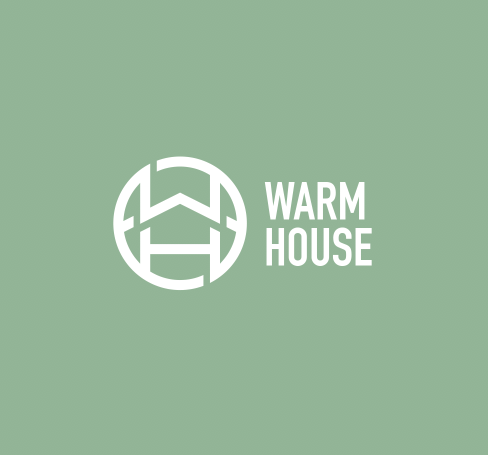
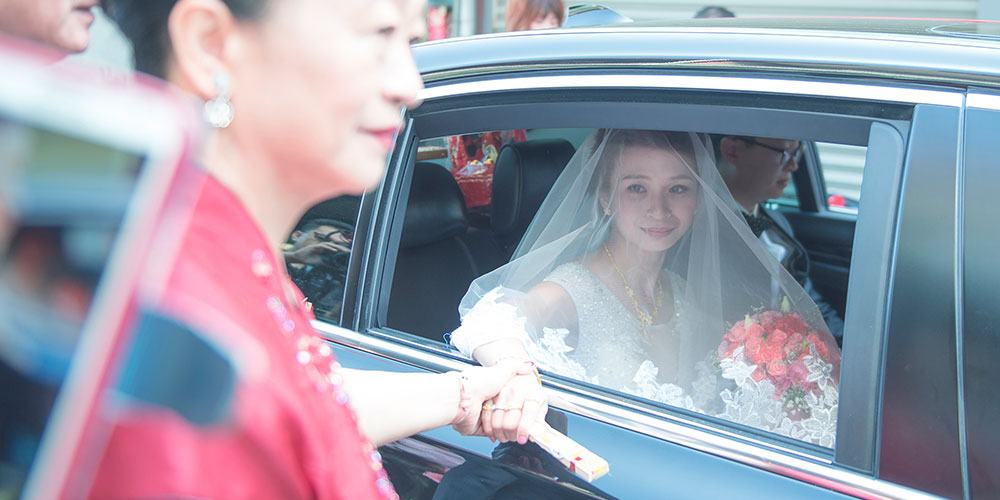
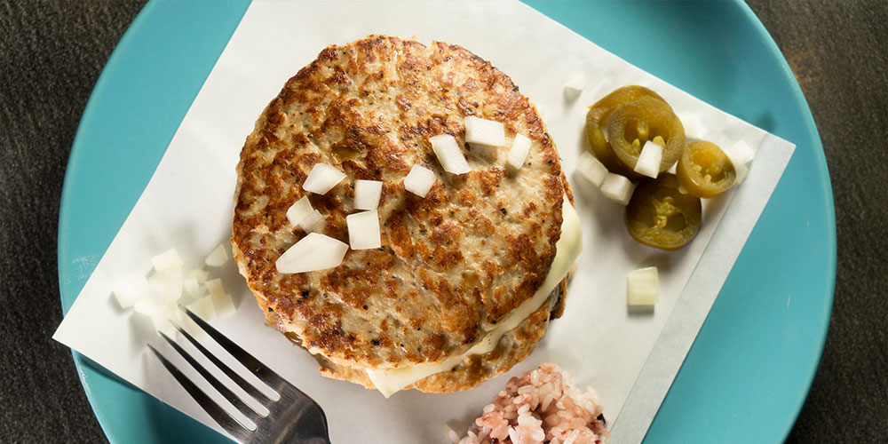
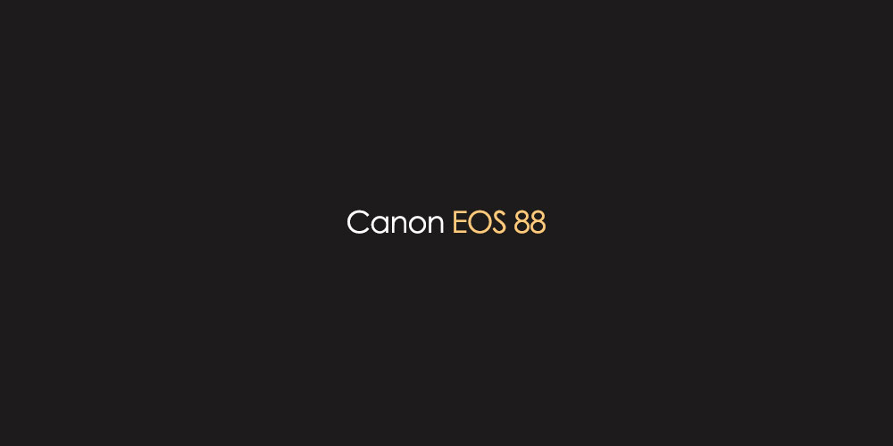

灰日子
梁躍叡譯
序
說到G Ray Leon，這個單純只存在於網路社群的英文名字，或許沒有什麼邏輯。不過卻也意外地讓他延伸出完全合乎其性格的弦外之音。
他是一個莫名憂鬱的人，常常在內心蒙上一層不明所以的灰色。偷偷把自己過的生活稱作『灰日子』，期待哪天能夠用著有點難懂的幽默、想把日子過成『詼日子』，詼諧的那個詼。但事實總是不盡人意。
對了，其實這本不像書的書，他打算用來介紹自己的工作。
000
Chapter 1 設 計
Chapter 1
設計
他本來應該是個有點任性的理工宅，但卻一不小心任性過了頭，把自己的諸多妄想當成了養活自己的工具。
其中一項就是當設計師。
對於現實與理想的拉扯，在這份生存空間狹窄的職業裡更能被體現出來。幸好，仍舊有這麼一部分的幸運，讓他得以紀錄點什麼。
至於是哪些紀錄呢？
『標誌』『平面』 他如此回答。
001more
- 

Chapter 1 設計
- 標誌
- 平面
返回
-
P1
-
P2
-
P3
Chapter 2
攝影
談起攝影，對於他來說更像是一個紀錄生活的方式。起初只是為了買台底片機給當時的女友，他卻在找資料的過程被一張張作品燒到，回過神來已經有了十幾台相機，以及出遊時一定要帶幾卷底片在身邊的壞習慣。
如今時過境遷，當初身邊的人已不在，但攝影仍是他生命中的一部分，連帶著那些回憶。當然，能偶爾接接攝影的案子、賺點錢也是很重要的。
- P1 婚禮紀錄 / Wedding Record
- P2 商品攝影 / Product Photography
- P3 個人紀錄 / Privacy
more002
- 
- 
- 
Chapter 2 攝影
- 婚禮紀錄
- 商品攝影
- 個人紀錄
返回

Chapter 3
網頁
『其實寫網頁對我來說，就像是換個方式畫圖而已，而且更能考驗想像力。』他曾經這樣評論過關於寫網頁這件事。
但年少總是輕狂，後來的他才驚覺原來自己說的話原來如此無知，因為要學的東西還有好多好多。
他翹著小指在電腦上鍵入下列的程式代碼，說是顯示網頁作品的分類按鈕：
1 <html>
2 <head>
3 <title>Chapter 3</title>
4 </head>
5 <body>
6 <span class="show”>Style 1</span> ①
7 <span class="show">Style 2</span> ②
8 </body>
9 </html>
2 <head>
3 <title>Chapter 3</title>
4 </head>
5 <body>
6 <span class="show”>Style 1</span> ①
7 <span class="show">Style 2</span> ②
8 </body>
9 </html>
- ① 前往內容網站的連結。
- ② 前往目錄網站的連結。
003more
Chapter 3 網頁
- 內容網站
- 目錄網站
返回
後記
如果這本書結束得令人突兀，那肯定只是因為他頂多就是個愛看書、卻不怎麼會用文字表達想法的人。
但如果對於他，尚且感到那麼一丁點的興趣，下面是他的聯絡方式。
- Phone｜ 0911321611
- Mail｜ maxgray1986@gmail.com
- Line ID｜ gray0307
『希望有機會可以聊個天。』看著窗外，他決定用這句話當作結尾。
fin.